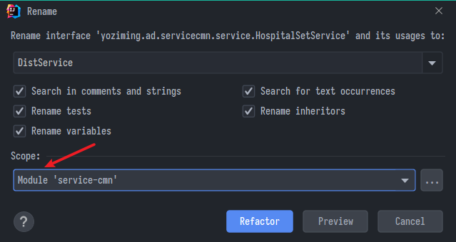
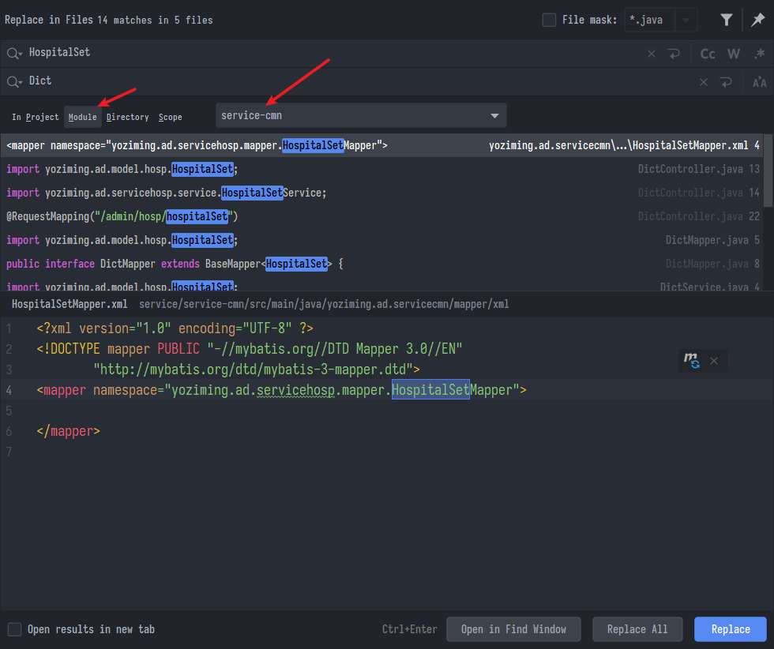
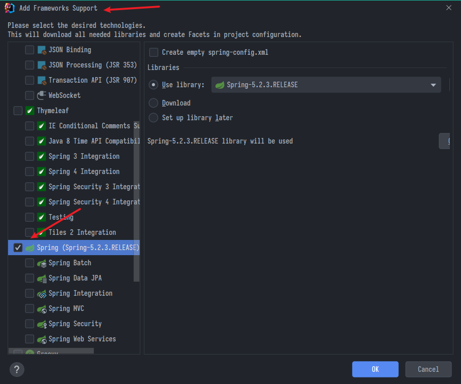
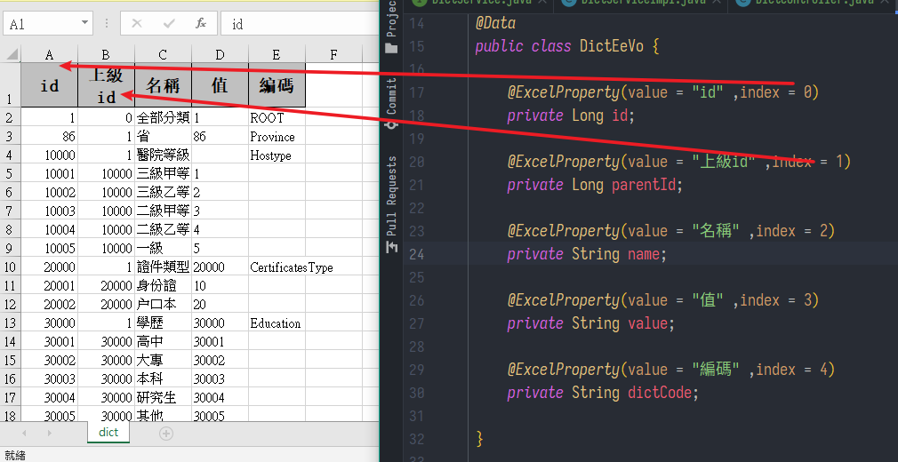

字典檔模組、Spring Cache+Redis、Nginx
尚硅谷Spring筆記-06
字典檔
暫時不知道作來幹嘛，就是放一些縣市級分區的資本資料
- 一樣分前、後端實現功能
顯示列表
後端-建模組
- 建立
service-cmn子模組- 複習一下過程，在父節點service右鍵新增
- 選maven，無原型，用
-命名，選Parent，其他不動 - 到pom.xml中
刪除
<properties>
<maven.compiler.source>8</maven.compiler.source>
<maven.compiler.target>8</maven.compiler.target>
</properties>
加入描述
<version>1.0-SNAPSHOT</version>
<packaging>jar</packaging>
<name>service-cmn</name>
<description>service-cmn</description>
- 把
servicehosp整包複製過來，取完整新包名yoziming.ad.servicecmn，開始改造名稱 - 可以用重命名功能與大量取代，注意大小寫與範圍


- 查到
mybatis plus有自動生成功能，但看了一下有點亂，用複製的挺穩也快，先將就吧 - 最後記得對子模組右鍵，引入框架支援
- 看到
application.properties裡面是灰的就要想到這點- 裡面連的庫名與服務端口、服務名要改
- 看到

- swagger的@Api註解value與tags的區別
- value用於描述
- tags用於分組，類的tag會覆蓋方法的
後端-寫接口
// DictController
@Api(value = "數據字典", tags = "數據字典")
@RestController
@RequestMapping("/admin/cmn/Dict")
@CrossOrigin
public class DictController {
@Autowired
private DictService dictService;
@ApiOperation("根據id查詢子數據列表")
@GetMapping("getAllChildDictById/{id}")
public Result getAllChildDictById(@PathVariable Long id) {
return Result.ok(dictService.getAllChildDictById(id));
}
}
// DictServiceImpl
@Service
public class DictServiceImpl extends ServiceImpl<DictMapper, Dict> implements DictService {
// 判斷id下面是否還有子節點
private boolean hasChildren(long id) {
QueryWrapper<Dict> qw = new QueryWrapper<>();
// 以自己為爸爸查兒子數量
qw.eq("parent_id", id);
Integer count = baseMapper.selectCount(qw);
// 有就是true
return count > 0;
}
// 根據id查詢子數據列表
@Override
public List<Dict> getAllChildDictById(Long id) {
QueryWrapper<Dict> qw = new QueryWrapper<>();
// 根據id查表中子id，所以找parent_id是傳入的id的
qw.eq("parent_id", id);
List<Dict> dictList = baseMapper.selectList(qw);
// 給bean賦值，因為資料庫中沒記載是否有子節點
// 對應的是@TableField(exist = false)
for (Dict dict : dictList) {
Long dictId = dict.getId();
boolean b = this.hasChildren(dictId);
// 這個this是當前類DictServiceImpl，調用自己的方法查
// 某個dictId是否有子節點，我用dict.has找半天有點昏頭
dict.setHasChildren(b);
}
return dictList;
}
}
前端
一樣三步驟: 加路由、寫接口、造頁面
路由(側邊欄)
@/router/index.jspath & redirect是自訂的側邊欄網址，與實際頁面無關alwaysShow: true讓單子項也顯示側邊欄- 綁定實際存在的頁面是
component: () => import('@/views/dict/list'), - 另外
children: [的[不能刪除否則報錯
{
path: '/cmn',
component: Layout,
redirect: '/cmn/list',
name: '字典管理',
alwaysShow: true,
meta: { title: '字典管理', icon: 'el-icon-s-help' },
children: [
{
path: 'list',
name: '字典列表',
component: () => import('@/views/dict/list'),
meta: { title: '字典列表', icon: 'table' }
}
]
},
接口
@/api/dict.js
import request from '@/utils/request'
export default {
getAllChildDictById(id) {
return request({
// ES6特性，反引號包裹強化字串
url: `http://localhost:8202/admin/cmn/dict/getAllChildDictById/${id}`,
method: 'get'
})
}
}
頁面
@/views/dict/list.vue
<template>
<div class="app-container">
<el-table
:data="list"
style="width: 100%"
row-key="id"
border
lazy
:load="getChildrens"
:tree-props="{ children: 'children', hasChildren: 'hasChildren' }"
>
<el-table-column label="名稱" width="230" align="left">
<template slot-scope="scope">
<span>{{ scope.row.name }}</span>
</template>
</el-table-column>
<el-table-column label="編碼" width="220">
<template slot-scope="{ row }">
{{ row.dictCode }}
</template>
</el-table-column>
<el-table-column label="值" width="230" align="left">
<template slot-scope="scope">
<span>{{ scope.row.value }}</span>
</template>
</el-table-column>
<el-table-column label="創建時間" align="center">
<template slot-scope="scope">
<span>{{ scope.row.createTime }}</span>
</template>
</el-table-column>
</el-table>
</div>
</template>
<script>
// 引入接口的js
import dict from "@/api/dict";
export default {
// 定義接收用的變量與初始值
data() {
return {
list: [],
};
},
created() {
this.getList(1);
},
methods: {
getList(id) {
// 發送axaj請求
dict
.getAllChildDictById(id)
.then((response) => {
// 請求成功，取出回應資料
this.list = response.data;
})
// 請求失敗
.catch((error) => {
console.log(error);
});
},
getChildrens(tree, treeNode, resolve) {
dict.getAllChildDictById(tree.id).then((response) => {
resolve(response.data);
});
},
},
};
</script>
<style>
</style>
- 引用的是"树形数据与懒加载"
- 注意下面方法需要實現
getChildrens，並且以id作為依據 - 另外axios的ajax請求已經封裝過，
response.data就是通常意義的那層了，不要再寫成.data.data坑到自己
導出列表
讓使用者下載整個列表
- 需要引用easyExcel依賴，由於依賴管理已經宣告過，這邊不用寫版本號
<dependency>
<groupId>com.alibaba</groupId>
<artifactId>easyexcel</artifactId>
<scope>provided</scope>
</dependency>
- 先造一個Vo實體類，屬性名跟原來的bean一樣，然後用
@ExcelProperty註解宣告欄位 - 當然實際操作的是List，遍歷把bean屬性用
BeanUtils.copyProperties塞到Vo中 - 最後用
doWrite(dictVoList)讓他一行一行寫下去

- 控制器與服務實體類
- // TODO 這邊我覺得有點怪，為啥接收的參數是
response，後端不應該是接req嗎
- // TODO 這邊我覺得有點怪，為啥接收的參數是
public void exportData(HttpServletResponse response) {
response.setContentType("application/vnd.ms-excel");
response.setCharacterEncoding("utf-8");
// 檔案名想取中文用URLEncoder.encode
String fileName = ("dict-export-" + new LocalDateTime());
// 設定回應是"下載檔案"
response.setHeader("Content-disposition", "attachment;filename=" + fileName + ".xlsx");
// 查資料庫
List<Dict> dictList = baseMapper.selectList(null);
// 把資料塞到對應的excel表格vo實體類
List<DictEeVo> dictVoList = new ArrayList<>(dictList.size());
for (Dict dict : dictList) {
DictEeVo dictVo = new DictEeVo();
BeanUtils.copyProperties(dict, dictVo, DictEeVo.class);
dictVoList.add(dictVo);
}
try {
// 輸出到回應流讓用戶下載
EasyExcel.write(response.getOutputStream(), DictEeVo.class).sheet("dict").doWrite(dictVoList);
} catch (IOException e) {
e.printStackTrace();
}
}
@ApiOperation("導出字典檔")
@GetMapping("exportDict")
public void exportDict(HttpServletResponse response) {
dictService.exportData(response);
}
- 由於要的東西就在HTTP回應中(下載)，這個前端就不寫api了，直接a標籤訪問url
target="_blank"開新視窗，否則點一下就跳成空白頁
<a
href="http://localhost:8202/admin/cmn/dict/exportDict"
target="_blank"
>
<el-button type="text"><i class="fa fa-plus" /> 導出</el-button>
</a>
- 想在方法中開啟連接則用
window.location.href="URL"
導入
easyExcel讀取excel表內容，需要用到監聽器
- 在Controller接收前端來的MultipartFile
// DictController
@ApiOperation("導入字典表格檔")
@PostMapping("importDict") // 注意mapping開頭沒有/
public Result importDict(MultipartFile file) {
dictService.importDict(file);
return Result.ok();
}
- 在DictServiceImpl把流交給監聽器處理
@Override
public void importDict(MultipartFile file) {
try {
EasyExcel.read(file.getInputStream(), DictEeVo.class, new DictListener(baseMapper)).sheet().doRead();
/*
DictServiceImpl繼承了ServiceImpl<DictMapper, Dict>
DictMapper又繼承了 BaseMapper<Dict>
所以在DictServiceImpl的方法中baseMapper其實就是DictMapper
*/
} catch (IOException e) {
e.printStackTrace();
}
}
- 監聽器DictListener需要繼承
AnalysisEventListener，這個監聽器會一行一行讀取excel表格中的資料為Vo實體類 - 直接在此轉為bean並調用mapper存到SQL中
public class DictListener extends AnalysisEventListener<DictEeVo> {
// 構造器注入，因為easyExcel官方文檔不建議將listener交給spring管理
private DictMapper dictMapper;
public DictListener(DictMapper dictMapper) {
this.dictMapper = dictMapper;
}
// 一行一行讀取
@Override
public void invoke(DictEeVo dictEeVo, AnalysisContext analysisContext) {
// 讀取表格內容，轉成dict物件
Dict dict = new Dict();
BeanUtils.copyProperties(dictEeVo, dict);
// 寫到資料庫
dictMapper.insert(dict);
}
@Override
public void doAfterAllAnalysed(AnalysisContext analysisContext) {
}
}
前端
- 設2個物件，按鈕與彈出的上傳表格模板
<el-button type="text" @click="importDict"
><i class="fa fa-plus" /> 導入</el-button
>
<el-dialog title="導入" :visible.sync="dialogImportVisible" width="480px">
<el-form label-position="right" label-width="170px">
<el-form-item label="文件">
<el-upload
:multiple="false"
:on-success="onUploadSuccess"
:action="'http://localhost:8202/admin/cmn/dict/importDict'"
class="upload-demo"
>
<el-button size="small" type="primary">點擊上傳</el-button>
<div slot="tip" class="el-upload__tip">
只能上傳excel文件，且不超過500kb
</div>
</el-upload>
</el-form-item>
</el-form>
<div slot="footer" class="dialog-footer">
<el-button @click="dialogImportVisible = false"> 取消 </el-button>
</div>
</el-dialog>
- 下面新增兩個方法
// 初始變量處
dialogImportVisible: false, // 讓彈框預設不跳出
// 方法區
importDict() {
// 讓彈框跳出
this.dialogImportVisible = true;
},
onUploadSuccess(response, file) {
this.$message.info("上傳成功");
this.dialogImportVisible = false; // 讓彈框再滾回去
this.getList(1); // 刷新頁面
},
Spring Cache
- 常讀取、不常修改的資料就很適合放到快取
- 例如:購物網首頁商品、熱門文章等等
事前準備
- 由於可以共用，回到common下的service-util子模組，首先導入依賴
<!-- redis -->
<dependency>
<groupId>org.springframework.boot</groupId>
<artifactId>spring-boot-starter-data-redis</artifactId>
</dependency>
<!-- spring2.X集成redis所需common-pool2-->
<dependency>
<groupId>org.apache.commons</groupId>
<artifactId>commons-pool2</artifactId>
<version>2.6.0</version>
</dependency>
- 新增設定類
@Configuration
@EnableCaching
public class RedisConfig {
@Bean
public KeyGenerator keyGenerator() {
return new KeyGenerator() {
@Override
public Object generate(Object target, Method method, Object... params) {
StringBuilder sb = new StringBuilder();
sb.append(target.getClass().getName());
sb.append(method.getName());
for (Object obj : params) {
sb.append(obj.toString());
}
return sb.toString();
}
};
}
@Bean
public RedisTemplate<Object, Object> redisTemplate(RedisConnectionFactory redisConnectionFactory) {
RedisTemplate<Object, Object> redisTemplate = new RedisTemplate<>();
redisTemplate.setConnectionFactory(redisConnectionFactory);
Jackson2JsonRedisSerializer jackson2JsonRedisSerializer = new Jackson2JsonRedisSerializer(Object.class);
//解決查詢緩存轉換異常的問題
ObjectMapper om = new ObjectMapper();
// 指定要序列化的域，field,get和set,以及修飾符範圍，ANY是都有包括private和public
om.setVisibility(PropertyAccessor.ALL, JsonAutoDetect.Visibility.ANY);
// 指定序列化輸入的類型，類必須是非final修飾的，final修飾的類，比如String,Integer等會跑出異常
om.enableDefaultTyping(ObjectMapper.DefaultTyping.NON_FINAL);
jackson2JsonRedisSerializer.setObjectMapper(om);
//序列號key value
redisTemplate.setKeySerializer(new StringRedisSerializer());
redisTemplate.setValueSerializer(jackson2JsonRedisSerializer);
redisTemplate.setHashKeySerializer(new StringRedisSerializer());
redisTemplate.setHashValueSerializer(jackson2JsonRedisSerializer);
redisTemplate.afterPropertiesSet();
return redisTemplate;
}
@Bean
public CacheManager cacheManager(RedisConnectionFactory factory) {
RedisSerializer<String> redisSerializer = new StringRedisSerializer();
Jackson2JsonRedisSerializer jackson2JsonRedisSerializer = new Jackson2JsonRedisSerializer(Object.class);
//解決查詢緩存轉換異常的問題
ObjectMapper om = new ObjectMapper();
om.setVisibility(PropertyAccessor.ALL, JsonAutoDetect.Visibility.ANY);
om.enableDefaultTyping(ObjectMapper.DefaultTyping.NON_FINAL);
jackson2JsonRedisSerializer.setObjectMapper(om);
// 配置序列化（解決亂碼的問題）,過期時間600秒
RedisCacheConfiguration config = RedisCacheConfiguration.defaultCacheConfig()
.entryTtl(Duration.ofSeconds(600))
.serializeKeysWith(RedisSerializationContext.SerializationPair.fromSerializer(redisSerializer))
.serializeValuesWith(RedisSerializationContext.SerializationPair.fromSerializer(jackson2JsonRedisSerializer))
.disableCachingNullValues();
RedisCacheManager cacheManager = RedisCacheManager.builder(factory)
.cacheDefaults(config)
.build();
return cacheManager;
}
}
- 回到service-cmn設定application.properties
# spring redis
spring.redis.host=localhost
spring.redis.port=6379
spring.redis.database=0
spring.redis.timeout=1800000
spring.redis.lettuce.pool.max-active=20
spring.redis.lettuce.pool.max-wait=-1
#最大阻塞等待時間(負數表示沒限制)
spring.redis.lettuce.pool.max-idle=5
spring.redis.lettuce.pool.min-idle=0
註解
Spring Cache通常在方法上註解
@Cacheable:緩存方法的結果，如果請求時已經有快取，就略過方法直接調用快取給結果- value:緩存名
- cacheNames:同上，二選一即可
- key:可選，自訂快取的key
@CachePut:無論如何都會執行方法並更新到快取庫- 結合使用，可以用@CachePut執行方法並更新快取庫
@CacheEvict:清空指定快取，通常用於更新或刪除- allEntries:清空所有快取，預設為false
- beforeInvocation:在方法執行前就清空，預設為false
應用
// 根據id查詢子數據列表
@Cacheable(value = "dict", keyGenerator = "keyGenerator")
@Override
public List<Dict> getAllChildDictById(Long id) {
// 導入數據
@CacheEvict(value = "dict", allEntries = true)
@Override
public void importDict(MultipartFile file) {
- 進redis用
keys *查看是否成功
Nginx
-
Nginx (讀作 engine x)，是一個免費開源非同步框架的web server，常用於反向代理、Http Cache、負載平衡器
-
特性:高併發效能好、簡單、消耗低
-
可以用docker啟動
docker run -d -p 7777:80 --name nginx-web-server nginx -
這裡先用windows版，官網下載解壓就能用，設定檔在
/conf/nginx.conf
server {
listen 9001;
server_name localhost;
location ~ /hosp/ {
proxy_pass http://localhost:8201;
}
location ~ /cmn/ {
proxy_pass http://localhost:8202;
}
}
- 意思是監聽
localhost:9001的請求，如果有符合~ /hosp/就導到localhost:8201- ~ 是正則表達
- 開一個cmd，啟動
nginx.exe即可
上次修改於 2022-01-16